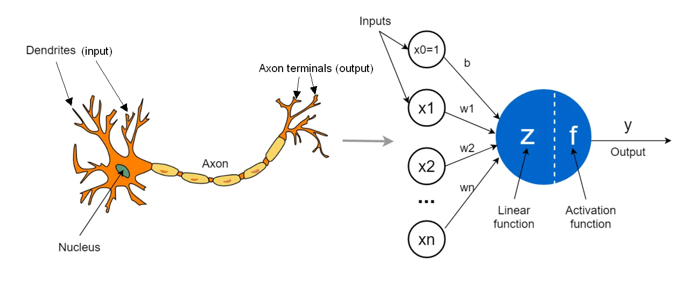
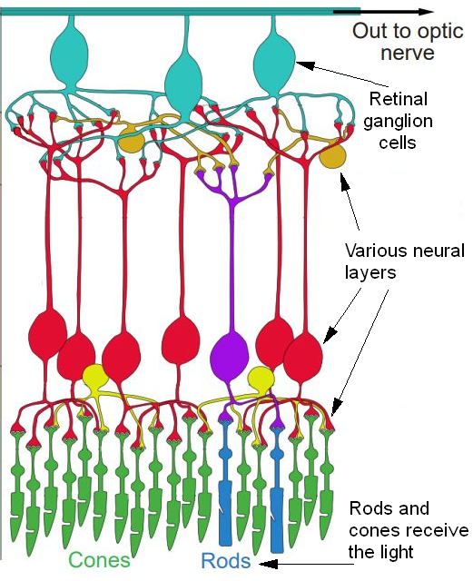
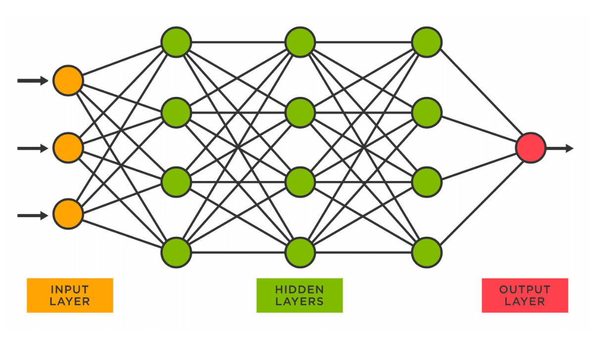
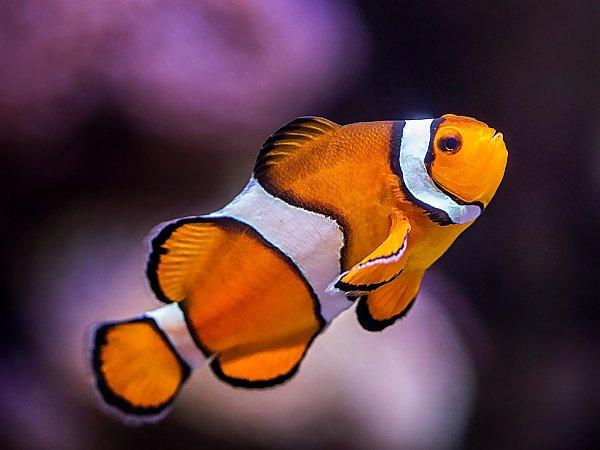
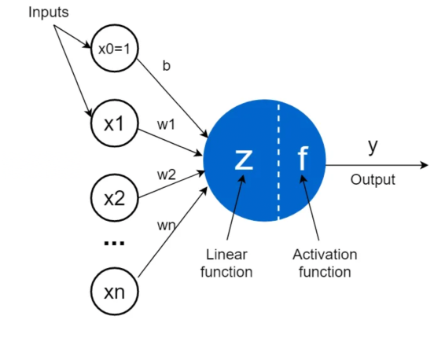
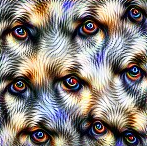
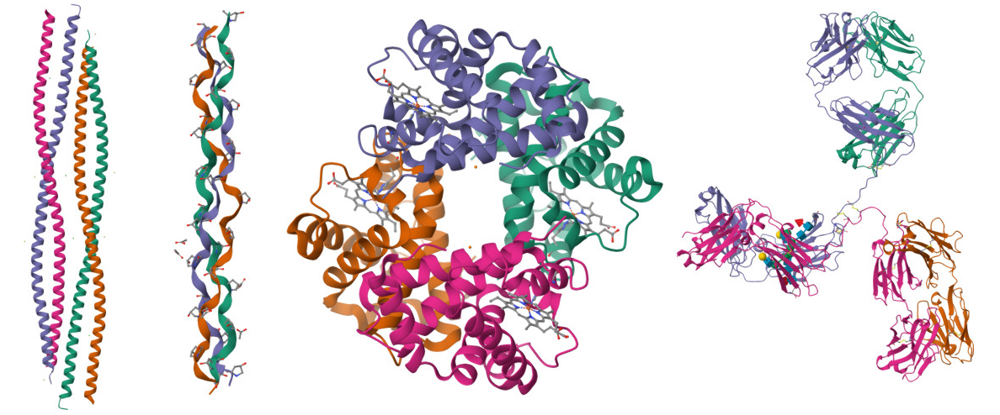

Where is AI heading - part 2/4: History of AI
Initially I planned to use this second post to dive straight into Large Language Models (LLMs). But when I thought about explaining the basic principles of LLMs, I realized that it makes much more sense to start by explaining the basic concepts of preceding AI systems; and only then do a deep dive into LLMs and transformer architecture in general.
In particular, we will focus in this post on image classification models. They are relatively easy to intuitively grasp and they are also very illustrative for concepts that we will need later on. On the way, we will touch a bit on the history of the AI as a field.
The following timeline high-lights some of the key events in the history of AI:
Important note: if you scroll through this post, you will see some complex-looking images. Don't be put off by those! Those are mostly provided for illustrative purposes - I will do my best to explain everything in simple and understandable terms.
Inspiration for AI - human brains
For a long time, humankind has been fascinated by questions as:
What is intelligence?
How do our brains work?
Is it possible to artifically imitate the inner workings of the brain?
What are the fundamental building blocks of the brain?
How do these building blocks function together to give rise to such complex phenomena as vision, smell, or logic?
Cells called neurons play an important role in answering all of the questions above. In the brain, millions of neurons form complicated networks that encode memories, shape personalities, drive decisions, and process the sensations of touch, taste, sight, smell, and sound (for deeper overview of this topic, read more at Khan Academy).
Some interesting facts about neurons in our brains and bodies:
An adult human brain contains approximately 80 billion neurons.
A single neuron may be connected to 1000-10000 other neurons.
The longest neuron in human body can be over a meter long (from bottom of spine to toes). However, most neurons in brain are less than a millimeter in length.
Human vision is made possible by a large number of neurons working in unison. Although neural networks consisting of hundreds of millions neurons are hard to research, each individual neuron by itself is (comparatively speaking) much simpler.
Neurons carry out the following functions:
they receive inputs (chemical and electrical) from multiple sources;
they combine those inputs into a single signal;
if the signal is strong enough, they fire an output that reaches the next neuron (or neurons).
Scientists working in this field realized that an individual neuron is not that difficult to describe mathematically. Building on that idea, Frank Rosenblatt came up in 1957 with the idea of a perceptron, a simplified mathematical model of a neuron. Just for illustrative purposes, compare a neuron in a brain and an artificial "neuron":

Biological neuron vs artificial neuron. Source: Towards Data Science (modified).
Artificial neurons (specifically in the original perceptron model) follow the same core principles as biological neurons, but in simplified mathematical form. Artificial neurons:
receive input values (positive or negative numbers);
combine those values linearly using specific weights (this will be explained more later);
produce an output if the combined value passes a certain threshold (otherwise, the output is 0).
The same basic structure for neurons powers the vast majority of neural networks used today (including LLMs). The main difference is how the third step works: modern networks swap out the strict "all-or-nothing" threshold for a bit more complicated threshold functions (mathematically: they use smooth activation functions, which scale smaller values down rather than setting them to 0).
TODO: Improve this previous paragraph.
A crucial feature of the perceptron was its ability to adjust its weights based on input data and target output. The process of weight adjustment is achieved through a learning algorithm, often referred to as the perceptron learning rule. This algorithm updates the weights to reduce the difference between the predicted output and the desired output, effectively allowing the perceptron to learn from its mistakes and improve its performance over time. In next sections, we will delve deeper into how learning process actually works.
Multi-layer networks
A fundamental limitation of the perceptron model was that it was a single-layer network - meaning there were no intermediate ("hidden") layers of neurons between the inputs and the output. Contrast that with the human vision, where there are ~10 layers of neurons, from the cells receiving the light impulses to the neurons in the brain that correspond to a concept, like seeing a cat.
The next image is provided mostly for illustration purposes - there is no need to memorize it! It just demonstrates some of the neural layers present in the eye. The image should be read from bottom to top - in the bottom, there are rods and cones, which respond to incoming light. Cones handle vision in bright daylight, while rods take over in low light and at night. After that, the signal passes through various layers of neurons (illustrated by the diagram), until it reaches the optic nerve, which takes the visual information to your brain for further processing.

The five neural layers in the eye. Source: Open Neuroscience Initiative (with my modifications)
There are 120 million rods and 6 million cones in the human eye. The raw image captured by those rods and cones is heavily compressed before it ever leaves the eye (via the optic nerve). For example, the retinal ganglion cells (drawn in blue color in the above image) act like a biological image compression algorithm.
The optic nerve consists of ~1.2 million optic nerve fibers. You might think of it as an 1.2 megapixel camera cable. However, human vision seems much better than a picture taken by a 1.2 megapixel camera, and there are some absolutely fascinating reasons for this.
After reaching the optic nerve, information is processed via a series of neural layers. Each layer builds on the previous layer and represents increasingly complex features:
layer: organizes visual information (technically: "LGN layer");
layer: detects low-level features: orientation, edges, and lines (technically: "V1 layer");
layer: combines simple edges into basic shapes and textures (technically: "V2/V3 layer");
layer: processes complex shapes and geometric forms (technically: "V4 layer");
layer: detects whole objects, faces, and abstract concepts, e.g., reckognizing a dog, a car, or a number (technically, 1 or 2 layers: "IT cortex").
For more detailed overview, see here.
TODO: Double-check this.
The same principles applies for machine learning: the number of layers must be sufficient so that complex features or concepts can be represented. However, increasing the number of layers also increases the training time.
Progress in AI research
Early research into neural networks (in 1940s to 1960s) encountered significant challenges. As mentioned above, those neural networks were primarily confined to single-layer architectures. Also, the research initially lacked a strong theoretical foundation. In 1969, a book called Perceptrons demonstrated that single-layer networks are fundamentally limited (mathematical explanation ++), and noted that there is no known efficient way to train multi-layer networks.
After that, there were several periods when the interest in AI research was considerably reduced. Such time periods are now called "AI winters" (see here for more exact historical background). However, there were dedicated researchers who regardless kept pushing the boundaries.
A major breakthrough came in the 1980s when Geoffrey Hinton helped demonstrate how a technique called backpropagation could be used to efficiently train multi-layer networks. Yann LeCun then took this algorithm and applied it to the problem of recognizing handwritten digits (he used a type of neural net called convolutional neural network (CNN). This practical application of multi-layer training established the paradigm that is nowadays known as deep learning. Remember those concepts - throughout this blog post, we will come back several times to models based on the CNN architecture, since CNN models work on visual data, which makes them great for providing intuitively understandable examples.
The next diagram shows a toy example of a 4-layer neural network (the input layer is not counted). On the left (orange) is an input layer; it is followed by multiple layers of neurons (green columns); the network concludes with an output layer, containing a single neuron in this example (red). Of course, this is just a toy example and neural networks nowadays used for practical applications contain millions of neurons or more.

A simplified illustration of a deep neural network. Source: KDNuggets
After some progress had been made in 1980s and 1990s, progress stalled again. Looking back, it is clear that the computers used then just did not have sufficient computation capabilities to train practically useful models. AI researchers tended to focus on other types of systems, for example carefully hand-crafted expert systems which require large amounts of manual programming. However, there were three notable figures - Yoshua Bengio, Geoffrey Hinton and Yann LeCun, who kept the flame of curiousity alive even when the funding sources disappeared. Over the decades, they collectively supervised 50+ PhD students.
Lets fast forward to 2008. AI research (++) was at a low; deep learning as such was seen by the industry mostly as a curious historical relic. A breakthrough came from an unexpected place. A researcher named Fei-Fei Li had an intuition from her previous experience (++ two sentences?) that progress on machine learning for image classification could be made if a more comprehensive high-quality training dataset would be created. She was also inspired by an estimate by vision scientist Irving Biederman that the average person recognizes roughly 30,000 different kinds of objects. With just a few colleagues, limited funding, 2 years of hard work, and a lot of ingenuity, she managed to compile a dataset of 14 million images, carefully annotated into 22 000 categories, which she named ImageNet. She released it in 2009. To help to popularize it, she also launched an image classification competition for AI systems.
In 2010 and 2011, winners of the ImageNet competition used techniques that were only slight improvements from the state of the art (mostly expert systems). In 2012, Alex Krizhevsky, Ilya Sutskever, and Geoffrey Hinton won the ImageNet competition using an AI system AlexNet, which was an example of a Convolutional Neural Network (CNN) - a model architecture that had waited for its time for .. years (++). It crushed the competition with an error rate of just 15% (winners of 2011 and 2010 had error rates of 26% and 28%, correspondingly), while the training time dropped from months to days. This event was a huge catalyst for the following boom in deep learning (and AI in general).
So, why had the time to shine now arrived for CNNs, 25 years after their invention? First of all, the computational capability of computers had improved enormously in that time. Secondly, the researchers behind AlexNet managed to use GPU chips to efficiently parallize the training process.
After the computation, many people wanted to know answers to questions such as:
How did AlexNet manage to beat the hand-crafted expert systems by such a large margin?
Furthermore, how can a model like CNN even succeed at such a complicated task like image classification?
After successful training, a CNN model has a property that we already observed for human brains: as information moves through subsequent layers, these layers start to represent increasingly complex concepts. Lets look at how a CNN model processes an image of a clownfish:
earlier layers detect edges and colors (e.g., the edge of an orange stripe);
following layers start to combine them into texture-like feature groups (e.g., an orange-white striped pattern);
later layers assemble whole object parts (e.g., fin of a clownfish);
final layers combine the parts and their position & orientation to detect the object class (a clownfish).
Thus, the CNNs manage to utilize one of the central pillars of intelligence: representing complex relationships via a combination of simpler relationships. In the next section we will have a look at how the learning process actually works.
Note. The AlexNet model has 8 layers and approximately 60 million parameters.

But how does this learning happen?
There are some similarities between learning in humans (especially babies) and how AI models are trained, and there are many crucial differences. Before we dive into those similarities and differences, it is useful to think a bit about how babies learn.
At birth, babies do not see colors - their vision is black and white. Babies at about 1 month of age do not yet see the world clearly - their vision is blurry and they cannot see very far. (++) Research from 2024 has also shown that babies prefer to look at simple, high-contrast patterns and edges found in everyday environments; furthermore, this is very important for the development of their visual skills. At later stages of child's development, they start to recognize and understand more complex visual aspects of their environment.
What follows is that the development of visual system and the learning process occur in parallel - as babies' eyes develop to allow for seeing more complex input (from black-and-white to color, from blurry and short-sighted to sharp and long-sighted ++), their brains learn to recognize and interpret increasingly complex patterns. Every time a kid learns something, it causes some neural connections to be strengthened or new connections to be formed. At various stages of development, different layers in the brain are going through the most active stages of development. Finally, it is important to note that sleeping also plays a crucial role in the learning process in the human brain.
Curiously, at the moment of birth a baby already has almost all of the neurons that the adult will have. The learning process is not about producing new neurons, it is about the process of new connections (synapses) forming between the existing neurons, unused connections being pruned (removed), and the strengths of connections changing.
Lets now think about AI models, their training, and the similarities and differences compared to human learning. First, the analogue of a biological synapse (connection between neurons) is a weight in an AI model. Below, we repeat the image from above about the structure of an artificial neuron; this time we have added some values to it for explanatory purposes (TODO). Bigger arrows correspond to larger weights (TODO).

Artificial neuron. Source: Towards Data Science (modified).
In neural nets, weights can also have a negative value (depicted with a dashed arrow - TODO). This has the effect of that neuron acting as a brake for the neuron in the next layer (the technical term is "inhibition"). Lets consider a network trying to distinguish a cheetah from a leopard - both are big cats with four legs, a tail, and spotted fur. The distinguish feature is the shape of the spots - cheetahs have solid, single black spots; leopards have complex, multi-colored rosettes. Lets assume that the blue neuron in the image stands for a network detecting cheetahs. x1 and x2 (TODO) would represent factors that are common for both cheetahs and leopards; xn (TODO) would represent the detection of rosettes. Since cheetahs do not have such rosettes, the weight wn (TODO) would be strongly negative, inhibiting the detection of the class "cheetah".
TODO: add image of cheetah vs leopard.
Human brains also make use of inhibitory signals in various contexts, including vision; if you are interested, click on the following box to expand it.
The word "learning" has a very specific meaning in machine learning: it means that during the training process, some weights are strengthened and some are weakened. The mathematical operations themselves connecting the previous layer with the next one do not change; only the weights do. This begs the question: how does the training process select the weights to change to gradually produce a useful AI model such as the AlexNet?
Remark. Keep in mind that computers does not see "see" the image as we do. Instead, they see an image as a grid of pixels, and each pixel is just 3 numbers for the AI model - corresponding to the amount of red, green, and blue in that pixel. In that sense, for AI an image is just a grid of numbers.
As an initial step, a model is chosen with all of the weights being completely random in a given range. In the example of AlexNet, this means that the model will produce completely random outputs (e.g., classifying a image of random noise as an elephant). Now, at each step, the following happens:
A small batch of images (e.g., 128 images in case of AlexNet) is chosen randomly.
For each of the images in that batch, the error rate is calculated (how good or bad the prediction was).
Using clever mathematical techniques (such as backpropagation and chain rule), it is calculated for each weight how much changing that specific weight in a positive/negative direction would have affected the error rates of the model.
Each weight is changed by a tiny amount in the direction (calculated in the previous step) that most improves the error rates.
This process is then repeated millions of times; if everything goes as expected, the error rates should start to fall and the model should learn to recognize features and classify images correctly and reliably.
Remark. Mathematically, the hard part is calculating how changing of each specific weight would have affected the resulting error rate, since each layer also affects each subsequent layer as well. Remember that a single image classification model will have tens or hundreds of millions of parameters, so the efficiency of this calculation is crucial. This is the problem that the technique of backpropagation solved. Recall from the historical overview above that backpropagation was invented only in 1980s after several decades of research into this area.
Lets walk through an example of how this training process could start. We are at the first step, where the model has been initialized randomly. The image that we are given depicts a slightly cloudy sky and the image has been classified (by a human, before training) as "sky". In the network that has been initialized randomly, there will be neurons in the earlier layers which respond to the blue color; and there will be neurons in the layer laters that eventually lead to the image class "sky" being activated. Since we have just started training, the image is as likely to be classified as the "sky" as a "strawberry". Since the number of neurons is large, there will be (just by chance) some neurons that react to the color blue and eventually affect the result being classified as the sky. So if the given batch contains images of sky, those weights that support this relationship ("lot of blue => image could depict the sky") are strengthened. At the same time, alternative relationships (e.g., "lot of blue => image could depict a strawberry") are weakened.
Of course, this is just the easiest type of heuristic one can have. In order to become truly effective at classifying images (e.g., images of the sky), the model has to learn (i.e., find corresponding weights):
to detect areas of same color, edges, lines, orientation of features;
to understand how simple edges combine into basic edges and textures;
to how complex shapes consist of simpler shapes and geometric forms.
Take the the example of detecting a clownfish. Lets assume that model has learned that clownfishes have orange and white stripes on them. The detection capability of the model will increase if it also starts making sure that those orange and white stripes are next to each other and alternate in color. For this to happen, some neurons in the later layers have to specialize to respond to the positional information of those shapes (orange/white stripes) that were detected in the preceding layers.
I recommend to make a small pause here. Think about some specific object in the world and think about how do you recognize it from an image. Try to imagine the features that define it and try to think how the model might learn to detect it.
The crucial question is whether there is a sufficient amount of positive and negative examples in the data set: the model may take "shortcuts" if the input data does not punish for it. There is a famous study that showed that image detection models often rely extensively on the environmental context for detecting animals (specific example: cows are usually photographed on grassy pastures). If there is an image of a cow in a new context (e.g., cow on a paved road, or cow on a beach), the model will fail to classify it as a cow. What has happened is that instead of learning the complex anatomical features of a cow (ears, muzzle, body shape), the model has learned a simpler rule: "somewhat cow-like animal on a green pasture => cow". This is an example of what is called shortcut learning.
To be completely honest, I think that humans would also do somewhat worse at detecting cows on beaches. To see what I mean, just look at the images on page 2 of the PDF linked above.
The solution is to enrich the dataset of images to have variation of contexts, backgrounds lighting, viewpoints and shapes. It is also useful to incorporate images taken by different photographers and camera types.
Finally, for something completely different - I would like to present a visual explainer of a CNN model. It is a webpage that runs a CNN model called "Tiny VGG" directly in your browser, allowing to upload your own image and see the classification model crunching through it before your own eyes. However, this model only accepts tiny images (64x64 pixels) and sorts the images to one of 10 pre-defined classes. This is intentional; firstly, it enables the model to run smoothly in a web browser. Secondly (and even more importantly), this allows the model to be simple enough to visually illustrate what really happens at each step. Try clicking on different steps to get an intuitive understanding of what happens at various steps and how the model "sees" the image.
A word of warning, though - since my overview of the topic has been rather high-level, I have not given all of the necessary definitions for understanding CNNs. I have not explained concepts like convolutional layers, kernel layers, ReLu activation, and max pooling that are used in the visual explainer page. If you want to learn those definitions, open the collapsible accordion box below. If not, just head directly to the visual explainer page.
In this section, we looked at the process that AI researchers follow for producing useful AI models like AlexNet. All of those steps can be shortly summarized in the following way:
Collect sufficient input data, classified with sufficiently high accuracy.
Define the goal function.
Choose a model architecture (e.g., CNN).
Initialize the model with random weights.
Run the training process.
How to look inside the model?
Lets consider a seemingly simple question - "do we fully understand how those models work?"
On the one hand, for a given local model, we fully know what is the model's architecture. Also, at any point of training, all of the weights are known and can be inspected. But there are things which are harder to assess:
What kind of patterns or capabilities has the model learned?
Which neurons are relevant or necessary for a given pattern or capability?
It is entirely possible to follow the mathematical calculations - understanding the meaning behind the weights is harder to do.
Neuroscientists face the exact same challenge when studying biological brains. If they show someone an image of a cat, they can observe which areas of the brain light up. But what specific groups of neurons were responsible for noticing the color of the fur? Which ones detected the patterns? Which ones separated the cat from the background, recognized its facial expression, or inferred its mood? Or even deeper - which neurons caused the viewer to feel an emotion based on how the cat seemed to be feeling?
Of course, both neuroscientists and AI researchers have developed techniques to overcome those issues. However, since a large part of human cognition and model capabilities are complex and emergent properties, it is not often easy to give simple and intuitive answers to such questions. For example, in the early days of modern brain research, scientists tended to make absolute statements like "each specific brain region controls just one distinct mental task". Modern neuroscience shows that high-level intelligence emerges from interconnected, dynamic networks rather than isolated single components. In the context of AI research, this is especially a problem for investigating general-purpose models like LLMs.
In the context of image recognition models, researchers have found clever ways to visually represent the inner workings of the AI models. One of those techniques is a saliency map. It is used to high-light the pixels in the input image that were most strongly used in the process of assigning the category label - e.g., "chair" or "cow" (read more here). Recall the earlier example where detection of cows relied on detection of grass by an extensive amount. In that case, the saliency map would strongly high-light the pixels containing grass, which would inform the researchers of the problem. Researchers could then fix it by enlarging the dataset by cows in other context (e.g., on a paved road).
Example of a saliency map. Source: Jay Alammar
There is also the technique of feature visualization for understanding what a given neuron (or a group of neurons) in the neural net reacts to. For this, an image with random noise is taken. After that, it is gradually modified so that it becomes an image that makes the previously chosen neuron(s) to be maximally active. This process is repeated for thousands of iterations. By the end of the process, the image is filled with objects that the neuron(s) react to. The end result of this process is often quite psychedelic. In the next image, we can see a feature visualisation for a group of neurons that activates for dog eyes.

Example of a feature visualisation (dog eyes). Source: Distill
This page allows to navigate through feature visualisations of a CNN model called GoogLeNet. Notice that initial layers (3a and 3b) correspond to simple textures, whereas later layers correspond to more complicated concepts. For each layer, there are visualisations that maximally excite a group of neurons ("positive channel") and visualisations that least excite that same group of neurons ("negative channel"). More explanations can be found here.
The importance of choosing a good goal function
Above, we considered the steps in the process of obtaining a useful AI model. I would like to now focus on the step of choosing an appropriate goal function, since this step is actually rather critical for success.
There are some fields where defining a good goal functions is easier, since the fields themselves are more precisely defined and there are ways for rather directly verifying the correctness of a generated result - in mathematics, a machine-readable proof of a theorem can be verified; in programming, it is possible to verify whether the program compiles and produces the expected output for various inputs.
In some other fields it is harder to define a suitable goal function. Think of the task of writing a novel - there is no direct way to grade the quality of a machine-generated novel on the scale of 0% to 100%.
As we will see in the next blog post, this is one of the reasons that LLMs have made enormous progress in some of the fields that where previously considered the hardest hills to conquer (e.g., mathematics), while the progress has been lagging a bit more behind in some other areas.
Narrow AI vs general-purpose AI
In a very broad sense, AI systems can be divided into two:
narrow AI systems, which can perform one (or a few) specific functions (e.g., AlexNet);
general-purpose AI systems, which can perform a variety of tasks (e.g., any LLM).
NB! The last definition should not be confused with "AGI" ("Artificial General Intelligence"), which is defined as "an AI system that that matches or surpasses human capabilities across virtually all cognitive tasks".
Note that while AGI is a vague term and everyone interprets it differently, the distinction between narrow and general-purpose AI systems is much more clear-cut - the distinction focuses on the applicability of the model, not its capabilities. Even the earliest version of Chat-GPT were general-purpose (even though they were not very capable).
For many people, the word "AI" has become synonymous to LLMs. I think that this is rather problematic and makes it extremely hard to have meaningful public discourse about risks and benefits of AI systems and their regulation. A lot of valid and difficult questions about LLMs (in particular about their safety and alignment) are either non-issues or much milder for more narrow AI systems. Of course, there are also issues that are relevant in both cases (e.g., bias).
Consider also energy efficiency. For example, lets compare the energy usage (in joules) of taking a single image and detecting the content of the image (i.e., an image classification task):
For a typical narrow AI system, the energy usage falls in the range of 0.05-2 joules (more details) - the equivalent of a household LED lightbulb shining for less than 0.1 seconds (essentially, one blink of a LED).
For a LLM, the energy usage for the same classification task could take ~200-300 joules (more details). If the answer is given by the LLM in the conversational format, the answer can easily be more than 10 times longer, bringing the energy usage to over 3000 joules - the LED lightbulb shining for 4 minutes straight.
For me, the difference is mind-blowing: using an LLM for the same task uses ~3000 times more energy!
For all of those reasons, I think that everyone should keep in mind that:
Crucially, narrow AI systems have produced (and continue to produce!) many impressive results. In the following section, we will have a look at three examples from Google DeepMind that predate the creation of modern chatbots. Looking back today in 2026, the last one of them may honestly be characterized as the greatest biological breakthrough ever achieved by an AI system.
What else has deep learning given us?
After AlexNet was released in 2012, the field of deep learning experienced an avalanche of renewed interest. Progress was made (using various deep learning techniques) in areas such as speech recognition, image generation, image classification, and machine translation.
One of the major sources for innovation in that time period was a company called DeepMind (founded in 2010 by Demis Hassabis, Shane Legg, and Mustafa Suleyman; acquired by Google in 2014). I would like to mention 3 areas where they successfully applied deep learning methods.
When DeepMind was founded, Demis Hassabis looked for ways of expanding the technique of deep learning to a wider array of contexts. For this, computer games proved to be a useful medium.
In 2014, DeepMind published research about a model (DQN - "deep Q-learning") that could learn to play a wide range of classical 1980s computer games (such as Pong, Breakout or Space Invaders) without given any description about how those games work. Instead, they used deep learning methods, letting the model learn by trying to play the games - providing the game's screen as an input (and the game's score) to the model at every frame. Model could only interact with the game by choosing which keys to press.
Initially, the model starts out by "pressing" random keys at times. Throughout the training, models accidentally stumble on tactics which increase the chances of achieving a high score and the corresponding weights in the network get reinforced. In machine learning, this is called reinforcement learning - the network takes actions and is scored based on the result (the score, in this case).
This is a crucial point that distinguishes it from learning that relies on pre-defined ground truth - which is called supervised learning. The model AlexNet, which we considered above, is an example of supervised learning. Using supervised learning in the context of Atari games would be impossible - it would mean that humans would have to manually judge a large portion of all possible game states. In that sense, reinforcement learning is much more flexible - it just requires that there exists some well defined goal function (like the game's score).
This also means that in the case of reinforcement learning, the model might find solutions that humans did not anticipate or were not aware of. Here is a video of how this happened in the game of Breakout - model discovered a nice strategy that the team in DeepMind had not been aware of.
After the dramatic chess matches between Garry Kasparov and a computer algorithm named Deep Blue (developed by IBM) in 1996 and 1997, chess engines continued to improve. Chess players slowly came to accept that machines are and will remain superior to human players. The game of Go, however, was a different story - until 2015, the strongest computer programs played at intermediate level at best. The board size is huge (19x19) and the number of possible games is staggering (that number has 173 digits). The difference with chess is that it is much harder to assess a position and say who is in the lead; the advantages become clear only in the end-game, where the score is solidified. Playing the game requires relying significantly more on one's intuition and experience.
DeepMind developed AlphaGo using a combination of machine learning and tree search techniques, combined with extensive training, both from human and computer play. It is fascinating that the models that they trained for playing Go were CNNs - the same architecture that AlexNet used. However, this time the inputs to the models were states of Go games, not images.
Since I want to keep this post length reasonable, I leave the choice to the reader - feel free to read the technical details of how AlphaGo works at a technical level, or skip it.
In 2016, AlphaGo played a match against Lee Sedol, one of the best Go players in the world - and won 4:1. There is an excellent movie on YouTube which captures the dramatic events and how the world of Go was ever changed through it. It also gives some nice visual explanations of the technology behind the breakthrough.
In recent years, leader of fronteir labs have talked a lot about how LLMs could cure cancer in the future. In a longer time span, this may be true; but in a shorter time span one has to keep in mind that while AI can help with suggesting new drug candidates or biological experiments, some of the steps can not be so easily side-stepped, like clinical testing and obtaining regulatory approval for drugs.
At the same time, we already have one incredible biological breakthrough in an area that had seen only limited progress in 50 years - protein folding. The problem's statement sounds innocent enough: given a protein, what 3D shape does this protein molecule take? Proteins consist of 22 different amino acids; those can be thought of as "universal LEGO bricks" that the body uses for various purposes. The role of the proteins is largely determined by the 3D shape that they take (which in turn is determined by which amino acids repel and attract each other). Here are some examples for illustrative purposes:
keratin - long rod-like shape - important component of hair;
collagen - long triple helix shape - gives strength to bones, tendons, and ligaments;
hemoglobin (a protein that additionally contains iron) - a basket-like shape - transports oxygen into cells;
antibodies (immunoglobulin) - Y-shape - each antibody attaches to a different target (e.g., a microbe or an infected cell) so that the immune system knows to attack that target.

Illustration: 3D structures of keratin, collagen, hemoglobin, and immunoglobulin. Source: RCSB Protein Data Bank
Protein folding was an active research area since 1971, and by end of 2022, scientists had identified 3D shapes for 200 thousand proteins. Previously, it could take a student their whole PhD study to determine the 3D structure of a single protein. In 2018, DeepMind introduced a specialized deep learning model called AlphaFold for the protein folding problem, and it turned out to be hugely successful. By 2022, they had achieved a milestone - they had mapped the 3D shape of 200 million proteins, virtually every protein known to exist in nature. They had taken what took people years and tens of thousands of dollars via experimental methods, and turned it into something that the AI could do in seconds for a negligible cost.
For this achievement, Demis Hassabis and John Jumper were awarded the Nobel Prize in Chemistry for AlphaFold in October 2024.
There is an excellent video overview from Veritaserium channel about AlphaFold. Alternatively, one can read technical details from DeepMind blog.
Conclusion
The main takeaways I want to leave to you, the reader:
Although AI systems have been originally been built on ideas borrowed from human brains, they are still very much different. And it is not necessary for AI systems to blindly imitate human brains.
Learning is possible where there is a clear goal function towards which to gradually optimize. Sometimes just defining a good goal function is already a significant step towards success.
There exists a large variety of different AI systems, both narrow and general-purpose. Being able to distinguish between them is a starting point for any public discussion about both the benefits and risks.
AI models are not magic - by learning the basic principles that they operate on, it is possible to have much more meaningful and deeper conversations.
Although we covered a lot of ground in this post, this overview really just scratches the surface of all the research done over the decades into various AI systems. In the next blog post, we will focus on generative AI (including LLMs), the transformer architecture, and how it is different from the preceding AI architectures.
To recognize their contribution to this field, Yoshua Bengio, Geoffrey Hinton and Yann LeCun were awarded the 2018 Turing Award for:
conceptual and engineering breakthroughs that have made deep neural networks a critical component of computing.